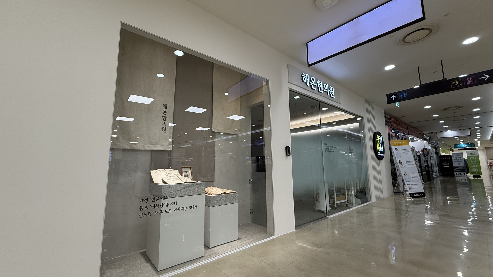
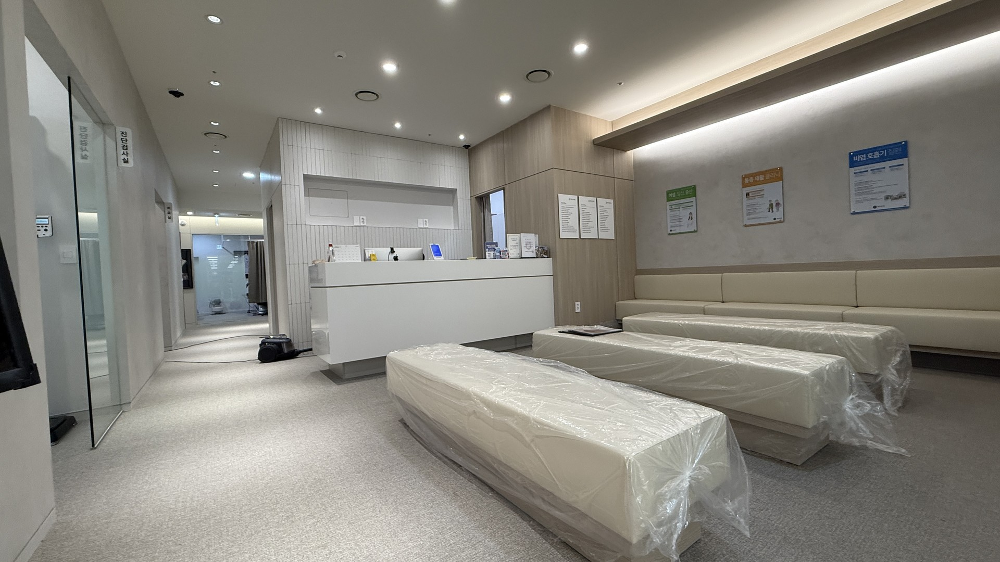
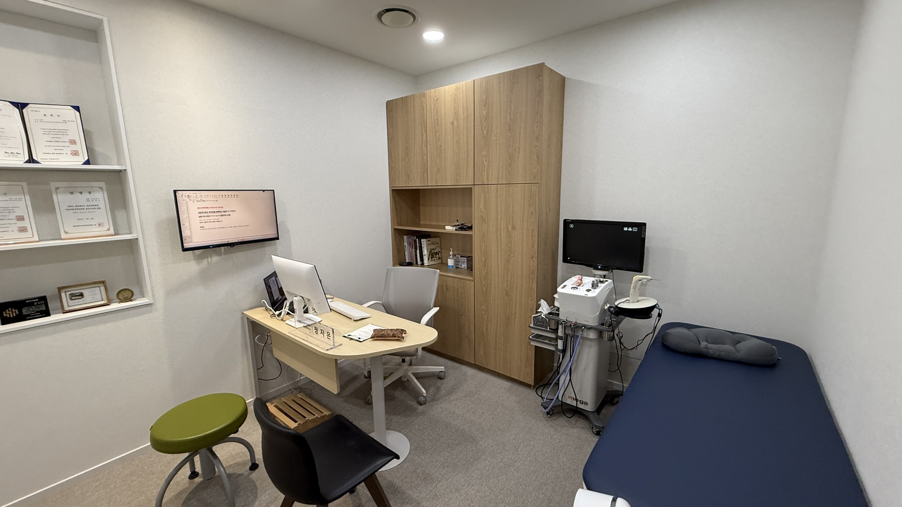
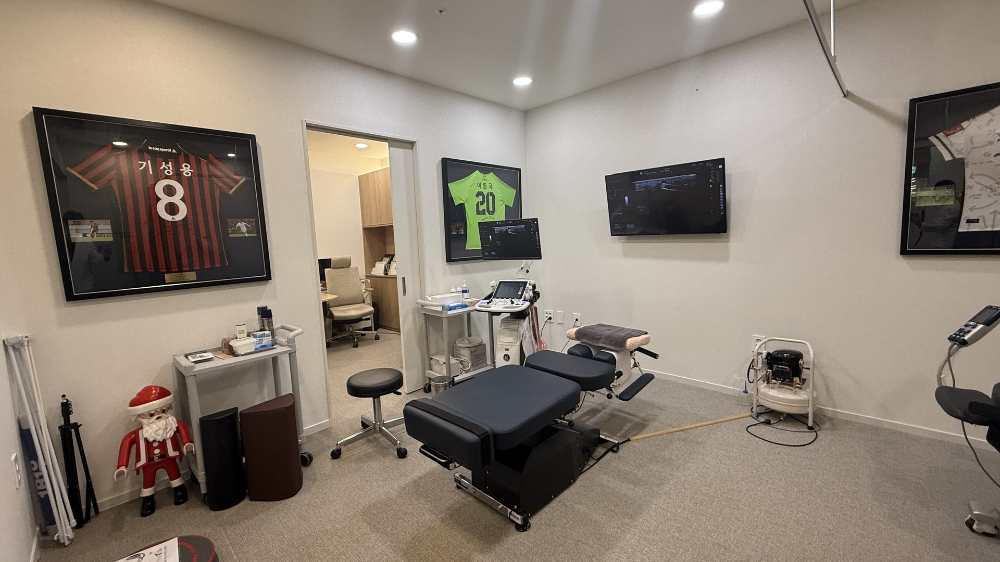

뿌리 깊은 경험
가업으로 이어온 뜻과 경험을 바탕으로 한의학을 가꿉니다. 시간이 흘러도 사람을 향한 진료의 본질은 변하지 않습니다.

OUR PHILOSOPHY
질환 너머의 사람을 이해하는 것에서 시작합니다.
열린 마음과 융합의 시각으로,
한 사람에게 필요한 진료를 함께 찾아갑니다.
가업으로 이어온 뜻과 경험을 바탕으로 한의학을 가꿉니다. 시간이 흘러도 사람을 향한 진료의 본질은 변하지 않습니다.
몸의 증상뿐 아니라 마음의 아픔에도 귀 기울입니다. 충분히 듣고 공감하며, 진단부터 생활관리까지 함께 이야기합니다.
한의학을 기반으로 현대과학과 함께 나아갑니다. 끊임없는 연구와 학술교류로 더 나은 진료를 고민합니다.
CARE FOR YOUR LIFE
아이의 성장부터 어른의 일상까지.
삶의 여러 순간에 필요한 진료를 만나보세요.
호흡기 · 소화기 · 검사와 변증진단
진료 안내02 / CHILD & ADOLESCENT성장 · 허약체질 · 소아청소년 건강
진료 안내03 / WOMEN’S HEALTH여성질환 · 임신 준비 · 산후 회복
진료 안내04 / CONSTITUTIONAL CARE허약체질 · 보약 · 한약 처방
진료 안내05 / PAIN & REHABILITATION근골격 통증 · 재활 · 회복 관리
스포츠MPS 인증한의원진료 안내06 / WEIGHT MANAGEMENT체중 · 체형 · 생활 관리
별도 사이트 07 / SPORTS MPS유소년 스포츠 · 성인 운동 · MPS 평가
별도 사이트해온의 진료
한의학적 진찰과 필요한 검사 결과를 함께 살펴
환자분의 상태에 맞는 치료를 계획합니다.
PEOPLE OF HAEON
한방내과 겸임교수, 한방소아과 전문의와
다양한 한방병원 진료 경험을 갖춘 4인의 한의사.
다양한 시각으로 몸과 마음을 살피고,
환자분이 납득할 수 있는 진료를 지향합니다.
INSIDE HAEON
입구부터 진료·검사실, 치료 공간까지.




